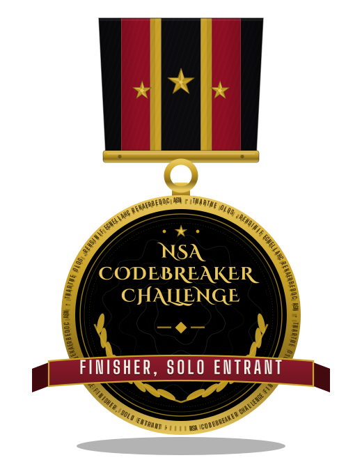
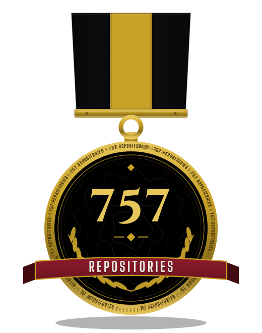

Portfolio index
Epsilon0xCell
Cybersecurity researcher and developer. Offensive security, OS internals, and AI-driven tooling. I build and I break. This page is the front door to the work: the flagships first, then a rebuilt site of its own for every finished project, then the record, with its sources.


I started building in public in April 2022, at fifteen, on the account @CY83R-3X71NC710N. Over four years it grew to 163 repositories. In September 2026 I stopped working from it and consolidated everything here, with full histories migrated and re-signed under this account. The old account stands untouched as the archive of record, and everything new ships from here.
Anyone can copy public code, so copies prove nothing. What cannot be copied into existence is the lineage: the project histories continue here without a break. And the name: the old account's history carries my full name as the author of 2,867 of its commits across 32 repositories, written between January and May 2023, years before this account existed. That lineage and that name in the commits are the proof. The rest matches too, and I offer it as consistency, not proof: the starred library matches the old account exactly, and its following network is being rebuilt name by name. Every one of those commits, and the Terms of Service basis for the succession, is indexed in proof-of-succession.
Everything below is written by me, about work I can point to. Where a project is unfinished or a site is still waiting, its entry says so. I would rather a reader find an honest note than a dressed-up one.
Rollout note, 2026-10-31 As of today, 25 of the 27 published project sites have been rebuilt to the Phase 3 standard. The last two, Kokoro-FastAPI-Colab and MacOS-Performance-Tweaks, are live with their earlier sites. Their security fixes have landed, and their site rebuilds are queued.
Security audit note, 2026-10-31 My personal repos have been read line by line, 170 of 170, Banking-Program included. Its audit found one defect, a deposit overflow that could print an infinite balance; the defect is fixed, and a regression test now covers it. The audit of the ShadowGuard-AI library continues as the rest of its repos land.
The flagships
Five efforts carry the rest, plus the library behind them. Each one is described the way I describe it in my profile, no larger.
ShadowStrike OS
The platform A custom, security-focused Linux distribution engineered for penetration testing and security research, my primary development testbed for novel security tooling and system hardening. Now public under the ShadowStrike organization.

NightSalvo
The flagship tool The flagship engineering effort, developed in private and held to an audit-first standard. Its original core architecture is an autonomous planner, an enforced scope guard, and a hash-chained evidence ledger, designed so that every action the system takes is authorized, bounded, and provable after the fact. Public artifacts and proof are released through the NightSalvo organization as they clear review.

Shatterpoint Security
The firm Founder of Shatterpoint Security: a boutique offensive-security practice in formation. Penetration testing, red teaming, and AI security testing.

Event_Zero
Featured project An experimental AI analysis environment built around strict isolation: the host system is completely separated from the analysis environment, and the AI operates inside a non-persistent container with restricted kernel access and no path to the underlying OS.

Eclipse-Shield
Featured project A productivity analyzer with a hardened Flask backend: a browser extension and Flask backend that judge whether a site fits your current mode, work, school, or personal. Decisions run on local allow and block rules, with optional Gemini calls for sites no rule covers.

ShadowGuard AI
The library A 584-project library of security tools and experiments, built with AI assistance under my direction, originally published under the ShadowGuardAI organization and now being restored under the ShadowGuard-AI organization, repository by repository.
Project sites, rebuilt
Every project gets a site designed for that project alone, written in my voice. These 25 are rebuilt to the Phase 3 standard and live today, 31 October 2026. Each row names the site by the title its own page carries, then says in one line what the project is.
| Project | What it is | ||
|---|---|---|---|
| Event_Zerothe fake_malware case file | An experimental AI analysis environment built around strict isolation. | Site | Code |
| Eclipse-Shieldnotes from the night watch | A browser extension and Flask backend that judge whether a site fits your current mode: work, school, or personal. | Site | Code |
| Wack-A-Molethe midway booth | Nine holes, thirty seconds, one point per whack. | Site | Code |
| Flowmodoro-Timerthe clock is the page | A timer where work earns break time at a fixed rate. | Site | Code |
| AI-Image-Generatorthe contact sheet | A prompt-seeded procedural PNG maker: palettes, styles, and one real specimen. | Site | Code |
| AI-Chatbot-Basic-V2knock first | A small ChatterBot based chatbot named Jordan, built around a home storyline with an identity check at startup. | Site | Code |
| AST-Scientific-CalculatorThe Instrument Panel | A calculator that parses to a tree and never uses eval(). | Site | Code |
| RSS-Atom-CLIThe Wire Room | RSS and Atom feeds, read in the terminal. | Site | Code |
| Python-Shape-GeneratorThe Geometry Plate | A program that generates five ASCII shapes. | Site | Code |
| ASCII-Fireworks-AnimatedThe Night Sky Programme | Two firework scripts from 2023, shown in their own ANSI art. | Site | Code |
| Printable-Bookmarkon the cutting table | A bookmark printer, specified like a printer's spec sheet. | Site | Code |
| Sandboxed-Brave-BrowserThe Airlock | Brave run inside firejail, documented as a man page. | Site | Code |
| ShadowSecurity-TributeThe Memorial Wall | A tribute to the organization I founded at the start, kept honest. | Site | Code |
| Python-DataType-VariableThe Specimen Ledger | A two-line first Python lesson on data types and variables, kept at two lines on purpose. | Site | Code |
| Python-Print-StrategiesThe Print Shop Proof Sheet | A Python print cookbook, every recipe a real transcript. | Site | Code |
| Custom-Cursor-Anki-2.0The Desktop Workbench | A 2021 Anki add-on for custom cursors, guarded so it cannot hide your pointer. | Site | Code |
| Fun-Script-AnimationThe Green Room Terminal Theatre | A terminal animation script, storyboarded in six panels. | Site | Code |
| Minimal-RedditThe Austere Broadsheet | Eleven third-party minimal Reddit clients, cataloged; my own two tries sit empty, and the site says so. | Site | Code |
| Multiple-Programming-LanguagesThe Phrasebook | A small collection of example programs, one per language, each file standing alone. | Site | Code |
| Favorite-Browser-PicksThe Switchboard | Two browser picks, Opera GX and Opera Air, plus my userscript that sends DuckDuckGo searches to StartPage. | Site | Code |
| macos-optimizerThe Control Panel | A menu-driven macOS optimisation script, adapted from an upstream optimiser with my own changes, credited to the original, and Gatekeeper enabled rather than disabled. | Site | Code |
| AllTalk-V2-MacOS-GuideThe Installation Route | A step by step guide to installing AllTalk V2 on macOS. | Site | Code |
| Media-Formats-EssayThe Essay, Typeset | A short opinion essay on why text, audio, and pictures are the best forms of media. | Site | Code |
| Contributing-TemplateThe Annotated Blank | A ready to copy contributing guide template, meant to be filled in and copied into another project. | Site | Code |
| Favorite-Linux-DistributionsTwo Specimens and a Hybrid | A short list of picks: Garuda Linux with KDE and Pop!_OS with Cosmic, and my combined pick, Garuda with Cosmic instead of KDE. | Site | Code |
Still waiting
Two published sites are live with their earlier versions. They are not part of the 25 above, and I do not present them as rebuilt. Their security fixes have landed; their rebuilds are queued.
Kokoro-FastAPI-Colab: a Kokoro text-to-speech server for Colab, documented endpoint by endpoint. Site · Code
MacOS-Performance-Tweaks: a set of macOS performance tweaks, written as a field manual. Site · Code
The elite row

Operator-grade work, every claim on this page verifiable.

How this collection is built
I am building a site for every project I keep, one wave at a time, and each site is designed for its project alone: a terminal for a terminal tool, a man page for a wrapper script, a broadsheet for a feed reader. No templates, because two projects that differ only in their text were never two projects to begin with. The source of every site lives in its own repository, in a folder named after the project, written in the first person, comments included.
The work behind the sites is the same work a reader can audit in the repositories themselves: every project reviewed, its code read and tested, its README made true, its comments written to explain choices rather than fill space. The sites are one face of that standard. The repositories are the rest of it.